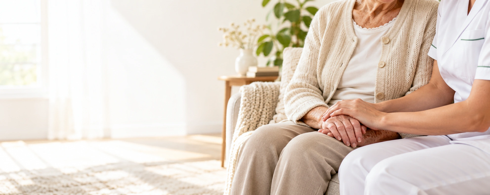
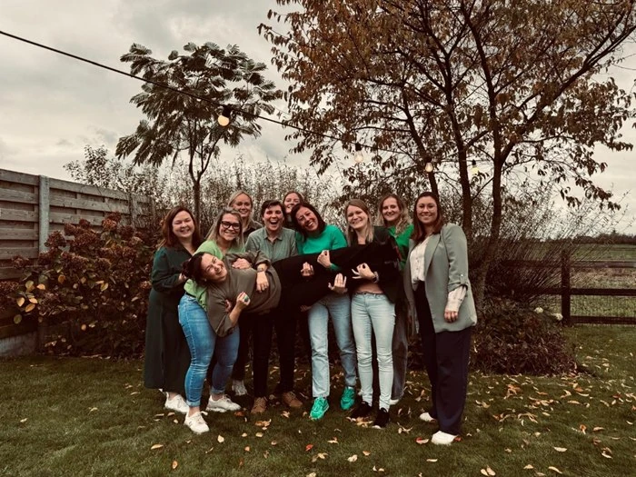

Een hart voor zorg.
Aandacht voor u.
Goede zorg voelt vertrouwd. Ann en haar team brengen warme, professionele thuisverpleging tot bij u. Met een luisterend oor en oog voor wat u nodig hebt.
Warm & persoonlijk
Deskundig & betrokken
Dicht bij u
Onze zorg, uw welzijn
De juiste ondersteuning.
Op uw maat.
Thuisverpleging
Van dagelijkse verzorging tot gespecialiseerde verpleegkundige hulp. Met respect voor uw ritme en uw thuis.
Diabeteseducatie
Heldere uitleg, praktische hulp en persoonlijke ondersteuning om met meer vertrouwen met diabetes om te gaan.
Voedingsadvies
Aandacht voor uw voedingsvragen en haalbare stappen die passen bij uw gezondheid en uw dagelijks leven.
Rookstopbegeleiding
Een persoonlijk rookstopplan, steun bij moeilijke momenten en ruimte om op uw eigen tempo vooruit te gaan.

Over Ann Thuisverpleging
Een warm team.
Dicht bij u.
Ann Vandewiele en haar team bieden persoonlijke thuisverpleging in Lichtervelde, Torhout en Gits. We luisteren naar uw verhaal en stemmen de zorg waar nodig af met uw huisarts, met aandacht voor u en uw vertrouwde omgeving.
Maak kennis met ons teamEen hart voor zorg? Kom erbij.
Verpleegkundige gezocht.
Een warm team wacht op jou.
Ann zoekt een betrokken verpleegkundige om haar team te versterken in Lichtervelde, Torhout en Gits. Werk mee aan persoonlijke thuiszorg, dicht bij de mensen.
Jouw plek in ons team
- Een warm en gedreven team
- Zorg met aandacht voor de mens
- Kennismaking en opstart in overleg
Lichtervelde · Torhout · Gits
Neem gerust contact op
Een vraag?
We luisteren graag.
Bel Ann rechtstreeks0496 123 040ann.thuisverpleging@telenet.be8810 Lichtervelde